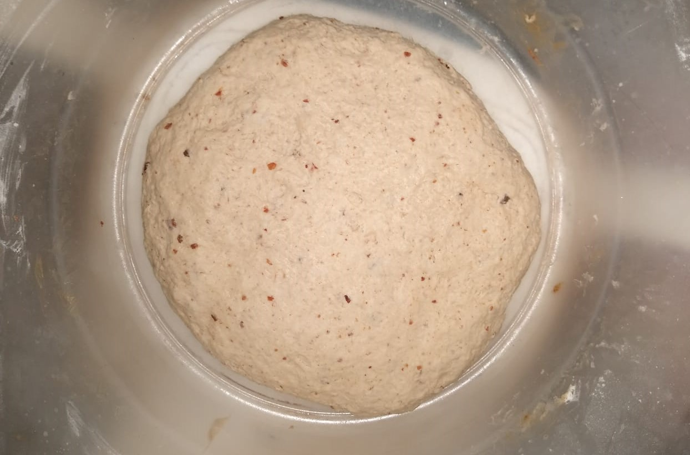
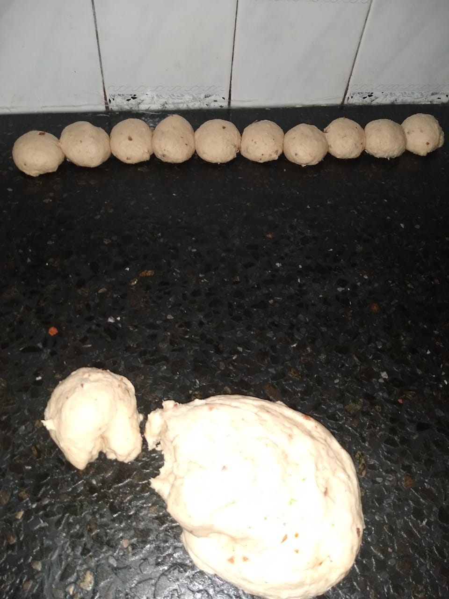

En la Provincia de San Juan, dentro del rubro de la panadería hay una rama que es la elaboración casera, en algunos lugares mas alejado de la ciudad se sigue cocinando en hornos de barro y la cocción se produce quemando leña, pero en este caso la cocción se realiza en horno de gas.
En ésta pagina les presento el trabajo que realiza una panadera que se dedica más específicamente a la elaboración de las semitas caseras.
Es importante destacar que la experiencia que se adquiere con el tiempo que se dedica a la elaboración de las semitas caseras hace que el producto adquiera un mejor sabor por sobre aquellos que tienen menos tiempo dedicandose a éste oficio.
Las semitas caseras son parte de los desayunos de las familas de San Juan, es habitual comprar éste producto para acompañarlo con mate los fines de semana. Los días de semana es común ver a las familias empezar el día desayunando una taza de café, té, o yerbiado que es una infusión como el té pero en éste caso se hace con yerba mate y como es de esperar acompañado de semitas caseras.
A continuación vamos a ver los pasos que se realizan en la elaboración de éste producto
Receta - Lista de los ingredientes
Harina
Agua
Grasa Líquida
Chicharrones
Levadura
Sal
En el primer paso se comienza con la preparación de los ingredientes para el amasado. El amasado puede ser echo con una máquina de amasar en caso de grandes cantidades, pero en el caso de una cantidad menor se puede hacer el amasado con las manos, empezando la preparación agregando harina, el agua, en éste caso hay que tener cuidado de no vertir demasiada agua al recipiente porque la masa quedará muy líquida y va a ser necesario agregar más harina para poder formar la masa, junto con la harina y el agua se agreaga la grasa líquida, la levadura y sal.
El amasado con las manos se debe hacer con vigor, de ésta forma la masa no pierde calor. La persona que amasa le pasa el calor de las manos durante el proceso de amasado ayudando a la levadura a realizar el proceso de fermentación propio de las levaduras que dá a la masa un aumento de su volumen.
Una vez que se ha logrado la integración de los ingredientes y se ha formado la masa, para saber si la masa es homogenea se puede hacer un corte por el medio y ver que en el interior no hayan grumos de harina o burbujas de aire con harina sin mezclar, se agregan los Chicharrones procurando que los mismos sean chicos, como el tamaño de una arveja o parecido, continuar el amasado hasta que los chicharrones se mezclen en forma homogenea en la masa.
Una vez que se ha formado la masa, se pueden ver los chicharrones en toda la masa, se pasa a un contenedor plástico y proceder a taparla con un plástico y una manta para evitar que pierda el calor. A partir de éste momento empieza el proceso de leudado, dejar reposar y prestar atención al aumento del volumen.
Una vez que la masa a leudado, comienza el proceso de armado de las semitas, el primer paso es armar bollitos de tamaño mediano, la práctica del panadero hace que ésta rutina sea más facil de realizar que para una persona que lo hace exporádicamente, para que las semitas no salgan demasiado chicas o demasiado grandes. Éste proceso debe ser realizado con cierta rapidez para evitar que la masa pierda el calor que adquirió en el proceso de amasado.

Al término del armado de los bollitos se vuelven a tapar con el plástico para evitar que pierdan el calor que la masa adquirió durante el proceso de amasado y se deja leudar un tiempo más para que la masa de los bollitos vuelva a tomar parte del volumen que perdió al momento de hacer los bollitos.

Después de dejar los bollitos tapados por el plástico por unos minutos para que retomen parte del volumen que perdió en el proceso de armado se comienza con el armado de las semitas. La forma y el tamaño que se le puede dar depende de cada persona que realize ésta tarea.

Los bollitos de masa se aplastan con la palma de la mano dándole forma circular y un espesor que dependen de cada persona que lo hace. Dependiendo del gusto de cada persona pueden hacer las semitas más gruesas o hacerlas más delgadas. Lo recomendable es hacerlas de mediano espesor no mayor a un centimétro y colocarlas diréctamente en la lata o bandeja de metal que va a ingresar al horno con la base apenas engrasada para evitar que las semitas se peguen a la lata o bandeja.

Una vez que se hicieron las semitas y se pusieron en la lata o bandeja de metal se ingresan al horno que ya tiene el calor suficiente para empezar con la cocción de las semitas. Como explicamos anteriormente en éste caso se opuca un horno de gas. La cocción no debe ser descuidada y presar atención al tiempo que es fundamental para que las semitas no salgan con falta de cocción, "crudas", o por el contrario se pasen de cocción y se quemen.

Cumplido el tiempo de cocción se retira la lata o bandeja de metal del horno y se pasa a ver que la cocción haya sido correcta viendo primero la parte superior de la semita y luego la parte inferior observando que el color debe ser tostado. Si por el contrario el color de la base o la parte superior es blanca o serca del color blanco es señal de que le falta tiempo de cocción. En éste caso se vuelven a ingresar al horno y se debe revisar la temperatura del mismo que no este con poco calor , en éstecaso se tiene que elevar la temperatura. Una vez que las semitas tomaron el color visto en la imagen se proceden a sacar del horno.
El último paso terminada la cocción de las semitas es ponerlas en una bolsa de papel. La bolsa de papel cumple la función de guardar el calor y absorver la humedad que evaporan por el calor que conservan después de haber sido sacadas del horno y hasta que terminen de perder todo el calor.
Éste es el proceso completo para la elaboración de las semitas caseras, un producto típico de la Provincia de San Juan. Esperamos que éste resumen sea de utilidad para aquellas personas que buscan elaborar productos regionales en sus hogares para agasajar a sus familiares o en reuniones de camping.